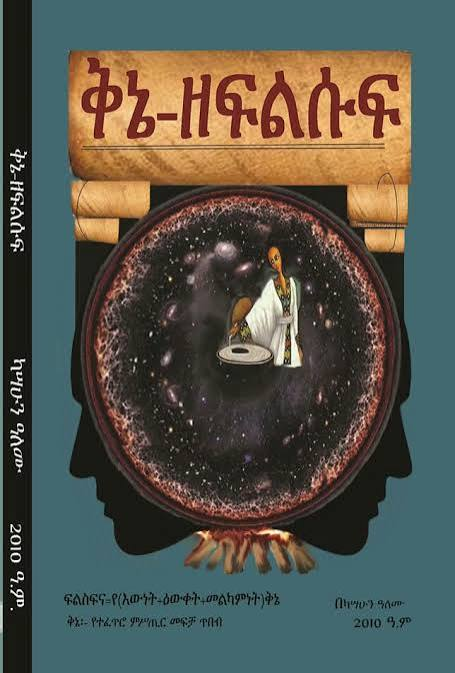

The Convergence of Lineage & Logic
Where ancient scholarly wisdom meets modern software engineering excellence
From Wollo to Web — A Journey Through Lineage and Code
Qine Systems was born from a profound intersection of heritage and innovation. Our founder's roots trace back through the rich scholarly traditions of Wollo Province, home to the ancient rock-hewn churches of Lalibela — monuments to Ethiopian ingenuity carved directly into living stone over 800 years ago.
From the green, fertile ecosystems of the South West — specifically Bench Maji Zone, Bero Wereda, Jeba Kebele — comes a deep connection to the natural world and the cyclical wisdom of agricultural communities. This grounding in both the highlands and the southern forests instills a philosophy of systematic growth and patient cultivation.
The Sem n' Werq Philosophy in Software Engineering: In Ethiopian literary tradition, "Wax and Gold" (ስም እና ወርቅ) describes poetry where surface meaning (the wax) conceals deeper wisdom (the gold). In our engineering practice, this translates to: elegant, intuitive frontend interfaces that mask bulletproof, secure backend logic.
Now, at Bahir Dar University, this ancestral logic framework fuses with rigorous computer science training. The same structured thinking that guided Ethiopian Orthodox Tewahedo Church scholars through centuries of theological debate now powers our approach to algorithmic problem-solving and systems architecture.
The Technical Translation
Beautiful interfaces hide complex, battle-tested algorithms. Simple APIs mask sophisticated architectural decisions. A clean user experience is the wax; the gold is the meticulous data validation, the optimized database queries, the encrypted data transmission, and the fault-tolerant error handling that operates invisibly beneath.
- Frontend clarity concealing backend complexity
- Intuitive UX masking advanced security protocols
- Simple function calls abstracting distributed system orchestration
- Minimalist design hiding maximum computational efficiency
